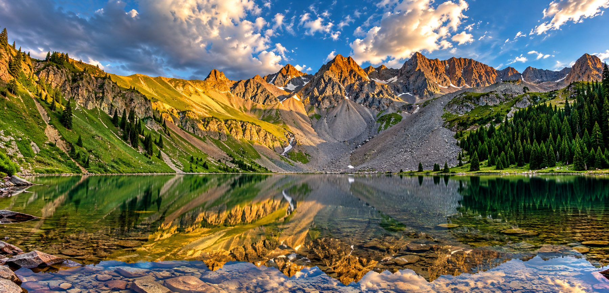

FILMMAKING · MOTION · STORYTELLING
Stories worth
feeling.
I’m Josh Steichen — an editor, cinematographer and storyteller bringing ideas to life through motion for nearly two decades.
BEHIND THE CAMERA
Craft, courage & curiosity.
From hanging out of helicopters for the shot to shaping raw footage into emotionally engaging stories, I’ve built my career across the full production pipeline.
 ▶
▶SELECTED MOTION
Cinematography & Editing Demo Reel
Commercial, documentary, live production and branded storytelling — from capture through final delivery.
Explore video work →TRUSTED EXPERIENCE
Brands & organizations
LIVE · MUSIC · ENTERTAINMENT
Artists I’ve worked with
ABOUT
Every frame.
Every cut.
Every sound.
My work spans cinematography, editing, sound design, motion graphics and color. I thrive where creativity meets strategy — on set, in the edit bay and everywhere in between.
Whether I’m behind the camera, in the edit bay, or crafting visual narratives from concept to completion, my goal is simple: to tell stories that resonate.
Watch my video résumé →
STILL FRAMES
Photography
Travel, portraiture, landscape and documentary work — moments that reward a closer look.
View photographyLET’S MAKE SOMETHING
Have a story
worth telling?
I’m available for freelance, contract and collaborative production work.
steichen.josh@gmail.com